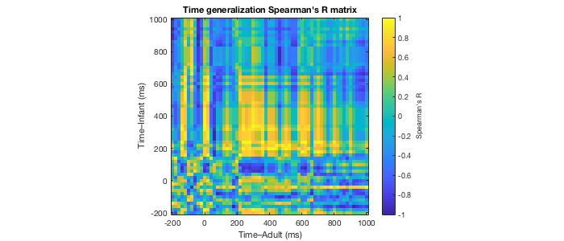

Example: Relate category representations in infants and adults
This script demonstrates the analysis relating category representations of infants and adults in time using RSA for study "Visual category representation of infant brain"
Contents
Initialize
% Clean command window, workspace and figure windows clc; clear; close all; % Start timing tic;
Download dataset (if necessary) and add VCR_infant/code to the MATLAB path
setup(3);
Downloading exampledata_adult.mat (please be patient). Downloading is done!
Load example dataset
load('../data/rdms/exampledata_time.mat', 'neuralRDMs'); % Check RDMs neuralRDMs
neuralRDMs =
1×2 struct array with fields:
RDM
Dimension
Content
Define infant's and adult's RDMs
RDMInfant = neuralRDMs(1).RDM; RDMadult = neuralRDMs(2).RDM;
Relate the RDMs in time
% Pre-allocate result matrix rsaResMat = nan(1,61,61); for timeInfant = 1:61 % Loop through time points % Vectorize RDMs vectInfant = vectorizerdm(squeeze(RDMInfant(:,:,timeInfant))); for timeAdult = 1:61 % Loop through time points % Vectorize RDMs vectAdult = vectorizerdm(squeeze(RDMadult(:,:,timeAdult))); % Correlation rsaResMat(1,timeInfant,timeAdult) = correlatevectors(vectInfant,vectAdult); end end % Display run time disp("RSA done.") runTime_minutes = toc/60
RSA done.
runTime_minutes =
0.0414
Plot time-time Spearman's R matrix
figure(1); imagesc(-200:20:1000, -200:20:1000, squeeze(rsaResMat)); axis xy; axis tight; axis equal; xlabel('Time–Adult (ms)'); ylabel('Time–Infant (ms)'); CH = colorbar('eastoutside'); CH.Label.String = "Spearman's R"; title("Time generalization Spearman's R matrix"); % Adjust figure position and size rectFig = get(gcf,'position'); width=700; height=300; set(gcf,'position',[rectFig(1),rectFig(2),width,height], 'color', 'white');